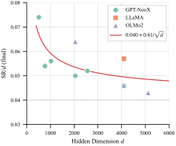
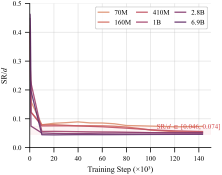
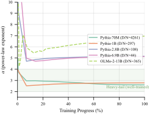
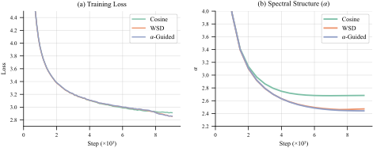
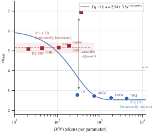
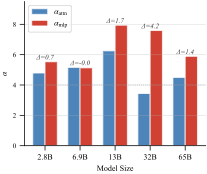

Physics-grounded spectral diagnostics that reveal what loss cannot — structure formation, degradation signals, and adaptive scheduling for frontier training runs.
Training a frontier LLM costs $100–500M, occupies thousands of GPUs for months, and processes trillions of tokens. Yet practitioners monitor this investment through a single signal: the training loss.
Piloting a $500M aircraft
with nothing but an altimeter
Measures compression progress. How much of the layer's capacity is actually used.
Measures structural quality. Whether the layer has developed organized, heavy-tailed features.
Well-trained layers enter the heavy-tail regime (α < 4), indicating pervasive self-regularization and robust feature representations.
SR/d converges to 0.040 + 0.61/√d regardless of scale or architecture. Training compresses Rényi-2 entropy by ~2 nats universally.
When dα/dt > 0, structure is degrading — invisible to loss. Larger models are more fragile: Δα = +2.71 at 13B.
α-guided decay matches hand-tuned WSD while outperforming cosine by −0.054 loss. Fully model-driven, no schedule hyperparameters.
| Model | Arch | d | Params | Tokens | D/N | SR/d | α |
|---|---|---|---|---|---|---|---|
| Pythia-70M | GPT-NeoX | 512 | 70M | 300B | 4,261 | 0.074 | 2.60 |
| Pythia-1B | GPT-NeoX | 2048 | 1.0B | 300B | 297 | 0.050 | 2.78 |
| Pythia-6.9B | GPT-NeoX | 4096 | 6.9B | 300B | 44 | 0.046 | 5.13 |
| Amber-7B | LLaMA | 4096 | 6.7B | 1.26T | 187 | 0.057 | 5.25 |
| OLMo-2-13B | OLMo2 | 5120 | 13B | 4.7T | 365 | 0.043 | 6.95 |
| OLMo-2-32B | OLMo2 | 5120 | 32B | 6T | 189 | 0.043 | 5.25 |
| K2-65B | LLaMA | 8192 | 65B | 1.4T | 21 | 0.036* | 5.09 |
* K2-65B has not converged (D/N=21); SR/d reflects training insufficiency. Full table includes 12 models.
Across all sufficiently-trained models, the normalized stable rank converges to a value determined by hidden dimension alone — not by total parameters, depth, or training budget.


SR/d alone explains 75.4% of downstream performance variance across 6 Pythia scales and 17 training checkpoints — without any evaluation data.
When α begins increasing (dα/dt > 0), the model's spectral structure is degrading — even as loss continues decreasing.
| Model | D/N | αmin | αfinal | Δα |
|---|---|---|---|---|
| Pythia-70M | 4,261 | 2.60 | 2.60 | 0.00 |
| Pythia-1B | 297 | 2.52 | 2.78 | +0.26 |
| Pythia-2.8B | 108 | 4.71 | 5.16 | +0.45 |
| OLMo-2-32B | 189 | 2.90 | 5.25 | +2.35 |
| OLMo-2-13B | 365 | 4.25 | 6.95 | +2.71 |

The MLP/Attention gap amplifies at scale:
Pythia-410M trained from scratch on FineWeb-Edu (9.9B tokens), 9,000 steps, 2 seeds.
| Schedule | Final Loss | Final α | Decay Start |
|---|---|---|---|
| Cosine | 2.913 ± 0.002 | 2.683 | Step 500 (6%) |
| WSD | 2.855 ± 0.001 | 2.472 | Step 7200 (80%) |
| α-Guided | 2.859 ± 0.001 | 2.442 | Step 7500 (83%) |

Scale-up in progress: 1B-scale 3-way comparison running on cluster (same data, Pythia-1B).
Our most surprising finding: a sharp structural phase transition separates small and large models.
Easily achieve heavy-tail
regardless of budget
Persistent immaturity even with hundreds of t/p

To test generalization beyond our training set, we measured Mistral-7B — a completely unseen architecture (GQA, sliding window attention, different training recipe).
| Metric | Measured | Predicted | Match |
|---|---|---|---|
| SR/d (square layers) | 0.040 | 0.050 | ✓ |
| α (mean) | 6.13 | > 4 | ✓ |
| αattn | 3.79 | — | — |
| αmlp | 9.22 | — | — |
| MLP/Attn gap | 5.43 | — | — |
Square-layer SR/d = 0.040 matches prediction (0.050 ± 0.01 is the observed range for d=4096 models). The formula generalizes to GQA.
Mistral's attention layers are nearly in heavy-tail (α=3.79) while MLP layers remain random (α=9.22). Gap = 5.43 — the largest ever measured, confirming MLP as the universal structural bottleneck.

| Capability | Loss | SR/d + α |
|---|---|---|
| Detect structural learning | × | ✓ |
| Detect structural degradation | × | ✓ (α reversal) |
| Adaptive schedule trigger | × | ✓ (dα/dt = 0) |
| Predict performance without eval | × | ✓ (r = −0.92) |
| Compare across model sizes | × | ✓ (normalized) |
| Diagnose training sufficiency | × | ✓ (post-hoc) |
"Loss tells you how well the model fits the data.
Spectral metrics tell you how well the model has organized itself to generalize."
Both are needed; only monitoring loss is flying blind.
< 0.05% of training compute. Embarrassingly parallel across layers and checkpoints. No training data access needed.
Pythia-1B trained from scratch on FineWeb-Edu with cosine/WSD/α-guided. Validates prescriptive claim at 2.5× larger scale. Running now.
5 benchmarks (LAMBADA, PIQA, WinoGrande, ARC-E, HellaSwag) on all 3-way checkpoints. Proves loss difference translates to measurable quality improvement.
Fork at α reversal point: Branch A (obey α, decay LR) vs Branch B (ignore α, continue peak LR). Demonstrates causal value of the spectral signal.
Second hold-out architecture validation (logit soft-capping, d=3584). Further stress-tests the SR/d formula on unseen designs.
How do spectral metrics behave in Mixture-of-Experts models? Router weights, expert specialization, and load-balanced training present unique spectral signatures.
The structural maturation timescale grows with model size. Precisely calibrating τ(N) would enable predictive "structural Chinchilla" budgeting for frontier runs.
Does spectral compression drive generalization, or merely correlate? Intervention experiments and theoretical analysis needed.
Integration with WandB/TensorBoard for production training pipelines. Auto-alert on α reversal, SR/d plateau, and MLP bottleneck detection.